光樹果
光樹果官網
光樹果官網
華人健康網

醫師表示，失智症如果是血管硬化而造成的智能改變，與三高（血糖、血壓、血脂肪）有關，但是和遺傳關係不大；
若是腦細胞退化，造成阿茲海默型失智症者，逾半數多與基因有關，千萬不可小覷。
失智症是否會遺傳？主要看失智症發生的原因。
臨床上，可粗分為二種，一為「腦神經退化」，以阿茲海默症最為常見；
二是「血管循環不良」如中風導致血管性失智症；研究顯示，有1/3左右的阿茲海默症患者會有家族遺傳，且常容易被忽略。
事實上，失智症會發生在任何人身上，但大部分好發於65歲以上的老人，且女性多於男性，主要是因為女性平均壽命較男性長所致，年齡越增加罹患失智的比例也愈高；
不過，也有極少數患者是在30歲、40歲或50歲左右即罹患失智症，俗稱「早發性失智症」。
科技新報

全球人口老化，罹患阿茲海默症的人愈來愈多。這種疾病是前 10 大死因中唯一無法預防、治癒或是延緩的疾病；目前只有 5 種可以緩解症狀的藥物，卻沒出現有效治癒的藥物。
調查機構 GlobalData 預估，2023 年阿茲海默症醫療市場可達 130 億美元，這是一個急需要解決的疾病，若能研發出可以治癒的藥物，市場將加速擴增。現在對大藥廠來說，絕對是發展治療阿茲海默症新藥的好時機，美國食品藥物管理局（FDA）也卯足全力協助藥廠開發新藥及取得藥證。可惜，台灣新藥研發公司大都聚焦在抗癌藥，但抗癌藥研發領域已經極為競爭，也許阿茲海默症的治療有機會成為台灣新藥研發的新藍海。
連番挫敗 損失百億美元
從 2016 年迄今，研發治療阿茲海默症的大藥廠，連番遭逢重挫。先是耗時 25 年進行超過數千人臨床實驗的禮來，三度挑戰阿茲海默症治療失敗，但最致命一擊的是，2016 年 11 月宣布治療輕度阿茲海默症的新藥「Expedition 3」3 期臨床實驗失敗，其單株抗體藥物無法有效延緩阿茲海默症之認知行為的惡化，數據顯示效果竟然相當於安慰劑。這樣的結果導致公司股價大跌 10.15%，創 2008 年 10 月以來最大跌幅，也拖累使用同樣作用機轉的 Biogen，股價下挫 3.83%。兩家公司市值一天蒸發 105 億美元，相當於超過一個廣達的市值。
美國 FDA 認為，阿茲海默症病患通常發現時，就已經失去許多認知和活動能力，因為臨床上阿茲海默症病程約 8 到 10 年，但若從發病前驅期算起，甚至可超過 20 年。所以，FDA 改變審核的方向，讓這類適用於阿茲海默症早期病患的藥物可以提早上市。至於晚期阿茲海默症的治療，需要長時間效果驗證療效，新藥的審核又會是另一套新的黃金標準。
目前，美國 FDA 有意引導藥廠，往早期阿茲海默症預防和治療研發，使藥廠可以早點取得藥證。現在的規畫是要先整合醫師、病患和研發單位的回饋意見，並試圖找出可能觸發阿茲海默症毒性蛋白澱粉狀蛋白 β 和濤（tau）的生物標記，以及引起神經退化的生物標記，若這些標記與阿茲海默症的早期症狀有關的話。經過臨床試驗驗證高風險的病患可以得到預防和治療，FDA 就可能核准通過。
對於這個屢屢讓大廠臨床試驗栽跟頭的疾病，微軟創辦人比爾蓋茲在意識到阿茲海默症對人類的影響持續擴大下，決定自掏 1 億美元腰包出手力挺。蓋茲善用他多年的科技視野，跳脫現有阿茲海默症研發領域的框架，重新思考新的出路，提出新的策略思考方向，包括希望未來可以取代解剖，開發一個可靠的診斷方式，早期診斷出疾病；以精準醫療的方式去思考，期望可以發現乙型澱粉樣蛋白和濤蛋白以外的生物標記做為標靶；此外，應該思考以資訊科技的角度，利用大數據來進行發現和治療的研究。
寧醫院官網

根據美國精神科協會所發表的精神疾病診斷標準手冊第四版(DSM-IV)，所定義的失智症標準為4：
一、出現記憶力喪失或減退的症狀。
二、同時合併出現右列至少一項症狀
(1)失語症(aphasia)
(2)失用症(apraxia)
(3)失認症(agnosia)
(4)執行能力異常(impair executive function)
三、有以上認知功能障礙並導致職業及社交功能的影響，並排除有譫妄(Delirium) 的情形。診斷阿茲海默症還需搭配醫師作智能測驗MMSE (mini mental state test) 及腦部斷層掃描作判斷。

如果某個父母身上的阿茲海默症是隱性基因引起的，那麼子女只有從另一位父母遺傳到第二個隱性的阿茲海默症基因，才會發展出阿茲海默症。然而，關於病人為何會罹患阿茲海默症，遺傳學上的解釋，始終非常難以認定。
作者：周永彩
阿茲海默症的遺傳風險
《天地一沙鷗》的作者李查．巴哈（Richard Bach）在《夢幻飛行》一書中指出：最後成為家人的人，不見得都有共通的血緣；家人是可以選擇的。但是，親生父母可不能由子女來選。有些遺傳突變與遺傳性阿茲海默症有關，但是它們占阿茲海默症案例的比重，少於 10%。
很多讀者在高中都學過孟德爾遺傳學。這樣應該就能了解，人體主要是採用父母的基因做藍圖，決定將來會有什麼樣的外表和體質。在孟德爾對遺傳學的解釋中，有些版本的基因會壓制其他版本的基因，也有些版本的基因會彼此合作，創造出混合的外貌及生理功能。
你還記得孟德爾的豌豆實驗嗎？如果把來自紅花豌豆的花粉，拿來讓另一株紅花豌豆的雌性部位受精，結成的種子將會長成紅花豌豆。同樣過程對白花「父母」也成立。但是，如果一朵紅花親代加上一朵白花親代，結果生出紅花子代，那是因為紅花基因會壓制白花基因。
如果紅花基因與白花基因沒有任何顯性階級差異，結果就會生出粉紅花的子代。
如果阿茲海默症的遺傳學是根據這種簡單的形式，那麼只要你的父親或母親被確診，要預測你的阿茲海默症罹病風險，可能就容易得多。
目前統計數據大概是這樣：如果父親的阿茲海默症是由一個可以傳給兒子與女兒的基因所引起，那麼每個孩子有50% 的機會遺傳到它。
uho優活健康網

（優活健康網記者林奐妤／編輯整理）失智症會不會遺傳？答案是肯定的，科學家也指出阿茲海默症與基因有關。阿茲海默症當然會遺傳，只是機率高或低的差別。只有小於1%的阿茲海默氏失智症病人，是由單一基因突變所引起，大部分的病人是由多重致病因子，包含基因和環境之間複雜的交互作用而引起。男性家屬至少有3至4%的人在家族史中，有一個或一個以上的「一級血親」有失智症；而女性病人的家屬，比例會更高。
阿茲海默氏失智症的病人中，若是一等親的家屬中罹患失智症的人數越多時，則相對的子孫代得到失智症的比率會較多和較大。目前與阿茲海默症相關的基因，已經在兩個類別中被發現，這兩類的基因會影響疾病的發生率：它們是「風險基因」和「確定性基因」。
康健雜誌第154期

目前已知有三個基因突變會造成自體顯性遺傳的阿茲海默症，分別是位於第21、14、1對染色體上的APP、PSEN1和PSEN2基因，其發病年齡分別為40～60、30～60以及40～75歲。其中具有APP和PSEN1基因突變者都會發病，只是發病的年齡遲早不一，而PSEN2基因突變的穿透率（penetration rate）為95％，表示5％的具PSEN2基因突變者不會發病。而且這三個基因突變的發病年齡範圍相當大，甚至在同一家族中，發病年齡可相差20歲之多。
對於早發型或懷疑有家族性遺傳的阿茲海默症患者，台灣多家醫學中心的失智症研究團隊認為，都可以經由血液偵測是否有APP、PSEN1或PSEN2的基因突變。

專家指出，基因引起的病例占總數不到10%，但子女與父母生活方式相近，部分不良習慣會增加患病機率。阿茲海默症不由單一因素造成，從飲食、運動及休息三方面做改變，仍被認為是防治該病最有效的手段。
爾灣加大精神科學教授Mark Mapstone表示，學者曾研究阿茲海默症患者群體，與健康群體在行為上的區別，發現患病是由多重因素引起。喜不喜歡社交、愛不愛打麻將，都不能成為防治該病的決定性因素。
約10%的阿茲海默症病例是因遺傳造成。Mapstone表示，因基因造成的案例，患者大約在40至50歲間就會有症狀顯現。雖然遺傳因素造成患病的案例不多，但父母與子女常常生活在一起，生活方式相近，部分共同的壞習慣，無疑增加患病機率。
多吃魚與蔬果、少吃脂肪含量高的食物，保持規律的鍛鍊、保證充足睡眠及經常學習新知識等，Mapstone認為，都可以有效防治阿茲海默症。
科學人雜誌 Scientific American

ADNI團隊領導人傑克（Clifford R. Jack）主要利用磁共振造影（MRI）來研究生物標記，他用MRI描述疾病可能的發展模式，也發現病理似乎可用生物標記追蹤。他發表了一篇技術性論文，同時也在「阿茲海默論壇」（Alzforum）網路研討會裡，對100名線上聽眾報告他的研究成果，聽眾當中有很多是該領域的佼佼者。阿茲海默論壇是一個交流想法的論壇、研究訊息的資料庫，也可能是最深入報導阿茲海默症研究的來源。
傑克在網路研討會指出，生物標記量測證實在診斷出特定症狀前幾年，該疾病已經開始發展。在這段期間（估計有5~20年），一種特殊的類澱粉蛋白開始在腦細胞外累積，使得突觸（神經元彼此接觸的位置）受損。PIB這類放射性追蹤劑可和病人大腦內的類澱粉蛋白結合，接著可用正子斷層掃描（PET）偵測訊號。這種PIB-PET影像技術顯示，在症狀產生前，蛋白質就已經累積到一定的程度了。
稍後（仍然在症狀出現前），正常功能為支撐神經元結構的τ蛋白開始脫離細胞骨架，彼此聚集在一起，嚴重影響細胞的功能。檢視腦脊髓液可以偵測到τ蛋白的聚集物。類澱粉蛋白會從腦脊髓液移出而在腦部堆積，這個技術也可以用來檢視該蛋白的消減。總的來看，腦脊髓液裡類澱粉蛋白減少與τ蛋白增加，就是阿茲海默症正在發展的警訊。
在診斷出阿茲海默症的前1~4年，病人通常會經歷輕度知能障礙階段，這個階段的特徵是記憶喪失與不易下決定。其他疾病也可能引起輕度知能障礙，不過對於發展中的阿茲海默症來說，這種現象來自特定大腦區域的神經元受損或死亡，而失去神經的速度會隨著時間而加快。（如果患者主要出現記憶的困擾，通常表示阿茲海默症正在發展）這個階段可用「容積磁共振造影」（volumetric MRI）來追蹤，這種技術可測量腦部神經元死亡後造成的萎縮。這些事件（包括早期類澱粉蛋白的增加）會破壞細胞代謝，可利用放射性追蹤劑「氟化去氧葡萄糖」正子斷層掃描（FDG-PET），來評估神經元代謝狀態。
早發型阿茲海默症相當罕見，僅佔阿茲海默症病人中的5%，主要發生於30-60歲之間。
有些早發型阿茲海默症被稱為家族性阿茲海默症(Familial AD)，具遺傳性。家族性阿茲海默症由一群在第21、14、1對染色體上基因變異和這些變異形成不正常的蛋白質所引起。
第21對染色體上的APP基因突變造成不正常的澱粉樣蛋白前驅蛋白(Amyloid Precursor Protein)形成。
第14對染色體上的PSEN1基因突變生成不正常的早老蛋白一號(Presenilin 1)。
第1對染色體上PSEN2基因突變製造出早老蛋白二號(Prensinlin 2)。
即使只有這幾個突變基因其中之一被雙親中的一位傳給下一代，下一代也幾乎一定會發展出早發性阿茲海默症 (完全外顯性complete penetrance)。如果家長之一是家族性阿茲海默症，在下一代得到此病的機會高達50%，這就叫做「體顯性」遺傳。
科學家了解到上述幾個突變基因，都會造成β型澱粉樣蛋白的形成量上升，β型澱粉樣蛋白是澱粉樣蛋白前驅蛋白(APP)形成的腦中老化斑塊主要成分。
這些早發型疾病研究的重要性，在於它們證實基因在阿茲海默症的重要性、協助辨認出阿茲海默症裡面的關鍵的基因，和部分解釋阿茲海默症，發作年齡差異的原因。
晚發型阿茲海默症
絕大多數的阿茲海默症屬於晚發型，發生在60歲以後，科學家透過研究發現導致早發型阿茲海默症的突變基因，跟這類疾病沒有關聯。
雖然，晚發型阿茲海默症至今還未發現特定的致病基因，一個易感性基因危險因子(Predisposing Genetic Factor)已被發現會增加病情惡化的風險；第19號染色體上發現的E型載脂肪蛋白基因(APOE, Apolipoprotein E Gene)。APOE中包含一段在血液中攜帶膽固醇的蛋白基因序列。APOE基因有不同的對偶基因(Alleles)型態，其中最常見的為：APOE ε2，APOE ε3，和APOE ε4，APOE ε2比較罕見，它也許有拮抗阿茲海默症的功效－當病人有APOE ε2，跟具APOE ε4 的人相比，阿茲海默症的惡化會更晚發生。
APOE ε3是其中最常見的對偶基因。研究人員認為它對疾病的角色很溫和，既不減少也不增加阿茲海默症的風險。
APOE ε4在40% 晚發型阿茲海默症病人可以被偵測到，而在所有人口中約佔 25~30%；顯示有阿茲海默症的人更有可能具有APOE ε4；但也有許多病人是沒有APOE ε4對偶基因的。
雖然確實機轉還未知，不少研究顯示APOE ε4會增加得病風險，也幫助解釋阿茲海默症好發年齡的變異性：有遺傳到一個或兩個APOE ε4對偶基因的人比沒有的人有更早的疾病惡化。
科學家相信還有4到7個其他風險因子基因的存在，他們正在使用稱為全基因體相關性研究（GWAS, genome-wide association study）的新方法，以加快研究的速度。另一個可能的風險因子基因SORL1被發現於 2007年。該基因與澱粉樣蛋白前驅蛋白在細胞內的運輸有關，已有三個獨立的研究，確認該基因跟阿茲海默症的相關性。研究人員發現，當SORL1表現較低，或處於其他型式時，β型澱粉樣蛋白濃度上升，可能會損害神經元。
iHealth


阿茲海默症的腦部變化
患者的腦部會出現神經細胞死亡及腦部組織的損失，並且腦部的體積會逐漸萎縮，進而影響所有功能。
腦細胞的變化
第一，神經細胞及神經突觸數目遽減，進而影響環境感知的能力。
第二，神經細胞間出現斑塊，它主要是產生於細胞間的不正常蛋白質。
第三，出現神經纖維纏結，主要是由一連串不規則的蛋白質在細胞內所組成。
科學家尚不能確定腦細胞死亡與腦組織流失的原因，但相信與斑塊及神經纖維纏結的出現有莫大關係，隨著病情的發展，斑塊與神經纏結會逐漸擴散到其他區域。
腦部受影響的區域有：
海馬迴
主要控管人類短期、長期記憶與方向定位，也是患者萎縮特別嚴重的區域。
皮質區
負責人類的認知功能，如學習、語言、情緒、情感等等，或空間訊息、視覺訊息的整合。患者的皮質區容易受到嚴重破壞，使認知功能大受影響。
腦室
腦部充滿液體的空間將變得更大，佔據與壓迫大腦的其他區域。
2015年全球失智症報告
隨著人口的老齡化，由於壽命的增加，失智症的人數越來越多。估計2015年全球失智患者4680萬，推估2050年達到1億3150萬。
在高收入國家，只有大約50％的失智者接受診斷。
在低和中等收入國家的情況不到10％接受診斷。
估計2015年花費在失智症的照護成本為8180億美元，到了2018年將突破1兆美元。
NOW健康
9月21日為國際失智日
随着人口的老龄化，寿命的增加，失智症的人数越来越多。
全球失智人口：
-世界卫生大会指出，目前全球失智症患者将近5000万，约占全球老年人口的 5%。
-估计在 2030 年将增至 7500 万人，在 2050 年将达 1.32 亿人。
-每年约新增 990 万人罹患失智症，相当于每3秒增加一位失智症者。
匯流新聞網
根據《國際老年心理學期刊》調查，阿茲海默症是僅次於交通事故與癌症，成為65歲以上民眾恐懼的第３名。
國內失智症權威劉秀枝教授在接受媒體採訪時指出：
65歲以上的人約有5％會罹患失智症，其中6成是阿茲海默症
隨著年紀愈來愈大，罹患的機率愈高。台灣女性平均壽命83歲，罹患失智症的機會就高達20％
阿茲海默症進程緩慢，由輕度到重度，大約會經過8至12年，每個階段進展的時間約3至5年。
輕度時只是忘記最近的事物，其他認知功能受到的影響並不大。不過，輕度失智症往往被忽略，等到中重度時、被家人發覺不對勁才就醫。
輕度失智症患者，當下所做的決定是清楚的，只是事後忘記「做過了」。
失智症是大腦功能退化的疾病，人人有機會，只是機率與發生的早晚而已。與其擔心害怕，還不如活在當下，趁著疾病未發生前，多運動、多動腦等預防準備。即使真的發生了，每天都會流失一點，學會「減法」過日子
EZP9.COM


新網醫訊
老年失智症(阿茲海默氏症)神經學症狀 常見的老年失智症於疾病的初期並無明顯的神經學症狀，除了認知功能與非認知功能症狀外，一直要到晚期才有神經學症狀的出現，常見的神經學症狀有椎體外症狀，包括肌肉張力增加、深層肌腱反射增強或是肌躍症，另外癲癇也有可能發生。由於這些神經學的症狀，造成病人開始臥病在床並伴隨有大小便失禁的現象。其他類型的退化性失智症病人就並非如此了，例如；額顳葉失智症的病人在在早期就會有原始反射的出現，合併有大小便失禁。另外，在血管性失智症的病人，早期也會有步態不穩、吞嚥困難、頻尿等症狀。因此由於其他原因而造成的失智症，所表現出來的神經學症狀，在出現的時間上與典型的老年失智症是完全不同的。
YAHOO新聞網
• 早發型失智的5大警訊 o 語言表達出現問題，想不起某個詞彙或是詞不達意。 o 出現脫序行為，例如隨意大小便、爆粗口、買東西不付帳。 o 情緒轉變很快。 o 個性大變，例如過度外向、沉默寡言。 o 視覺空間分辨不清，容易出現幻想、妄想。
台北醫學大學官網
**疾病簡介
失智症即俗稱之老人癡呆症，為腦細胞退化，造成記憶力及其它神經功能 減退，此病症與一般所謂正常老化有很大的不同，係指全面性的心智能力 逐漸喪失，包括思考能力、記憶能力、判斷力、知覺、時空感、理智、學 習能力、及解決能力，而病人本身並未感受到以上感官知覺的改變，仍保 持意識清醒、身體功能良好，甚至仍具警覺性。
退化性失智症：
大部份患者都是屬於這類型，其中又以下列三者最常見； 阿茲海默症(最常見的失智症)、額顳葉型失智症(早期即出現人格變化或語 言障礙)、路易氏體失智症(第二常見，早期就可能會伴隨身體僵硬、手抖、 走路不穩、重複地無法解釋的跌倒現象)
血管性失智症：
為腦血管疾病所引起的失智症，特性是認知功能突然惡化、 有起伏現象、呈階梯狀退化。
其他失智症：
其他原因引起，如腦瘤、腦炎、水腦、愛滋病、酒癮、維生 素B12 缺乏、甲狀腺功能低下等，多為可逆或被治療。
新北市失智症共照網
二、失智症的病因與分類
依據統計，造成失智症原因最多的是阿茲海默症，其次是血管性失智症。失智長者有時會存在兩種或兩種以上的病因，最常見則是阿茲海默症與血管性失智症並存（又稱混合型失智症）。
造成失智症的原因很多，一般的病因可以歸納如下 :
(一)退化型失智症
是退化性的疾病所造成的，目前尚無法完全治癒，但是經過治療後可以延緩病程惡化，主要的疾病類別有以下幾項:
1.阿茲海默症(Alzheimer’s Disease)
這是最常見的退化性失智症，失智長者的病情緩慢變壞，逐漸影響到大腦全面功能。最明顯的早期病徵為記憶衰退，對時間、地點和人物的辨識出現問題。失智長者表現為兩種以上認知功能障礙，且其腦部神經受到破壞，屬不可逆的進行性退化。透過電腦斷層及核磁共振可發現阿茲海默症初期以侵犯海馬迴為主。往生後腦解剖可發現異常老年斑及神經纖維糾結，平均病程約8-10年。
2.額顳葉型失智症(Frontotemporal Dementia)
平均好發年齡在50歲以上，以侵犯腦部中的額葉及顳葉為主，特性為早期即出現人格變化，常常會有不合理的行為舉動，或是早期就出現語言障礙、表達困難、命名困難等漸進式退化現象。
3.路易氏體失智症(Dementia with Lewy bodies)
此類型失智除了認知功能障礙外，失智長者在很早就伴隨身體僵硬、手抖、走路不穩、重複出現無法解釋的跌倒意外。平均好發年齡在70歲以上，並有較明顯的精神症狀，例如情緒不穩、猜疑心重、妄想、幻聽等症狀。
4.其他還有巴金森氏症(Parkinson disease dementia)、亨汀頓氏症(Huntington Disease)等等所造成的失智症。
(二)血管性失智症(Vascular Dementia)
是因腦中風或慢性腦血管病變，造成腦部血液循環不良，導致腦細胞死亡而智力減退，是造成失智症的第二大原因。一般中風病人若存活下來，約有5%的病人會有失智症狀，追蹤期5年，得失智症的機會約25%。此類失智長者早期出現的病徵常出現動作緩慢、反應遲鈍、步態不穩與精神症狀。智力的變化時好時壞，甚至有突發性的變化；中風的情況如果多次復發，失智長者的認知能力可能會呈現「階梯式」漸進衰退、越來越差。
(三)其他因素導致之失智症
有些失智症則是由特定原因所造成，經過治療之後，有機會可以恢復，這類型失智的病因有:
1.營養失調：例如缺乏維生素B12、葉酸等營養素。
2.顱內病灶：例如常壓性水腦症、腦部腫瘤、頭部外傷、一氧化碳中毒等。
3.新陳代謝及電解質失調的內分泌疾病，例如：電解質不平衡、甲狀腺疾病、肝腎腦病變等。
4.中樞神經系統感染：如梅毒、愛滋病、庫賈氏症等。
5.長期服用藥物、酗酒、化學毒素中毒或重金屬中毒後遺症等。
高醫醫訊
一、藥物治療
病因性治療：
(1)退化型失智症，如阿茲海默症和巴金森氏症失智症等：目前只能延緩疾病的進行或改善症狀。
(2)血管性失智症：針對血管危險因子，如高血壓、糖尿病、高血脂治療，或使用腦循環改善劑或抗血栓藥物等。
(3)可逆性病因：如維他命B12、葉酸缺乏、水腦症、硬膜下出血、甲狀腺功能低下和憂鬱症等，針對病因治療。
症狀治療：
(1)改善認知功能：可幫助失智症病患改善臨床症狀，延緩病程的進展，如膽鹼酶抑制劑，像愛憶欣(Aricept®)、憶思能（Exelon®）、利憶靈（Reminyl®），或NMDA受體拮抗劑(一種神經元保護劑)，像憶必佳（Ebixa®）、威智（Witgen®）。
(2)改善精神行為症狀：如上述的改善認知功能藥物，或抗精神病藥物、抗憂鬱劑、抗焦慮劑等。
二、非藥物治療：
(1)環境的調整（熟悉、穩定、有安全感的）、活動的安排、溝通方式的改變。
(2)認知訓練：設計認知活動，幫助患者動動腦、減緩認知功能退化，可參加像瑞智學堂或頭腦體操班等課程。
(3)懷舊治療：藉由對過去事物及經驗的回憶而增加患者語言表達、人際互動、改善情緒之目的。
(4)音樂治療、芳香治療、園藝治療、寵物治療、藝術治療、按摩、多感官刺激治療：藉由各種媒介來改善患者情緒、增進人際互動，及提供豐富之感官刺激等。
(5)光照治療：改善情緒問題、睡眠障礙和認知功能等。
(6)運動：對認知功能和日常生活功能都有助益。
生醫觀點Bio Med 文 / 徐榮隆 新光財團法人新光吳火獅紀念醫院
在台灣地區的估計，退化性病因所造成的失智症大約佔百分之五十，血管性病因所造成的失智症約佔百分之四十，而可治療性病因所引起的失智症約只佔百分之十。
因此可說最常見的失智症是老年失智症（阿茲海默氏症） ，其次是血管性失智症，再其次才是可治療性失智症。
過去由於老年失智症無任何方法治療，因而使得醫護人員在面對這一類疾病時，常常覺得力不從心。
然而，近年來由於新藥物的出現，已使得這樣的情況改觀，在一九九三年由美國聯邦藥物管理局所核准的塔克寧（Tacrine）和一九九六年的愛憶欣（Aricept）和更新的憶思能（Exelon）都為這類退化性疾病的治療帶來一線曙光。
因此，醫療工作人員應一反以往消極對待此症的態度，轉而積極診治失智症病患，對於可治療性病因所導致的失智症，則更應及早診斷、及早處置，以收事半功倍之效。
台灣失智症協會
台灣失智症盛行率及人口數 依衛生福利部(民國100年)委託台灣失智症協會進行之失智症流行病學調查結果，以及內政部106年12月人口統計資料估算：台灣65歲以上老人共3,268,013人，其中輕微認知障礙(MCI)有598,694人，佔18.32%；失智症人口有259,013人，佔7.93% (包括極輕度失智症105,180人，佔3.22%，輕度以上失智症有153,832人，佔4.71%)。也就是說65歲以上的老人每12人即有1位失智者，而80歲以上的老人則每5人即有1位失智者。
台灣失智症協會
如何預防失智症
目前還沒有任何藥物可以治癒失智症，因此如何預防失智症就成為大眾關心的議題。在現今預防失智症的研究中，多數以阿茲海默症為主，而隨著失智症研究不斷的進展，我們也越來越瞭解有助於預防或延緩失智症的因子。
民眾應積極在生活中增加大腦保護因子（趨吉），同時減少危險因子(避凶)，以降低罹患失智症的風險，甚至預防失智症的發生。
※趨吉( 增加大腦保護因子)
【多運動】
【採地中海型飲食】
【多社會互動】
【維持健康體重】
※遠離失智症危險因子(避凶)
【三高 (高血壓、高膽固醇、高血糖)】
【頭部外傷】
【抽菸】
【憂鬱】
【預防失智秘訣】
活到老 學到老 老友老伴不可少
多動腦 沒煩惱 天天運動不會老
深海魚 橄欖油 蔬果豆穀來顧腦
保護頭 控體重 血壓血糖控制好
不抽煙 不鬱卒 年老失智不來找
台大醫院官網/健康教育中心

預防失智症的營養照護
預防失智症的營養照護，應該及早發覺並預防發生，更重要的是維持家人的關心及支持，對於失智症的改善很有助益。
對於預防失智症的營養照護，建議如下：
1. 均衡飲食：養成正確的飲食習慣，適量的攝取各類食物．每天30-35種不同食物搭配，確保各種營養素不致缺乏，使身體適當運作，失智症自然不易上身。
2. 攝取足夠的維生素B群—葉酸、維生素 B1、B2、B6、B12等營養素，避免血中同半胱氨酸過高，降低中風的危險性，進而降低血管性硬化失智的發生。
3. 鈣質有穩定情緒、改善焦慮煩躁，情緒不穩或精神無法集中的問題，足夠鈣質可紓解神經的敏感度，睡前一杯溫牛奶，幫助優質的睡眠，提供腦部充足的休息。
4. 低油、低鹽、低糖的自然飲食生活調理，遠離高血壓、高脂血、糖尿病等血管硬化相關性之疾病發生。
5. 維生素A、C、E是良好的抗氧化作用，可清除體內自由基，預防血管硬化的作用，因此，補充富含維生素A、C、E是食物是不可疏忽的，如番石榴、奇異果、葡萄柚、花椰菜、柳橙等 。
6. 遠離酒精、咖啡因等刺激物質 。
7. 養成運動的習慣，規律的生活作息--減少抽煙等都有助於預防老化的作用。
Dementia Australia
癡呆症是指由影響大腦的病症所引起的一系列症狀， 而非指某一種特定的疾病。 癡呆症影響患者的思維、行為以及處理日常事務的能力。 大腦功能受到影響，足以妨礙患者的正常社交或工作生活。 癡呆症的標誌在於患者因認知能力下降， 無法開展日常活動。 若兩種以上的認知功能顯著受損，醫生即會做出癡呆症診斷。 受影響的認知功能可包括記憶力、語言技能、資訊理解、空間技能、判斷力和注意力。 癡呆症患者在解決問題和控制情緒方面可能會有困難。 他們還可能出現性格改變。癡呆症患者出現的確切症狀取決於引起癡呆症的疾病損壞的大腦部位。 就許多類型的癡呆症而言，大腦中的一些神經細胞會停止工作，失去與其它細胞的連接，並且死亡。 癡呆症通常具有漸進性。這意味著疾病在大腦逐漸擴散， 患者的症狀在一段時間後會變得更嚴重。
大新竹醫院 神經科鄭文立醫師演講資料
 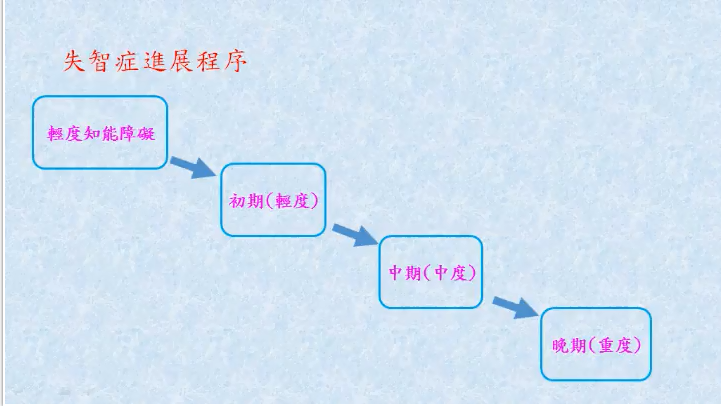
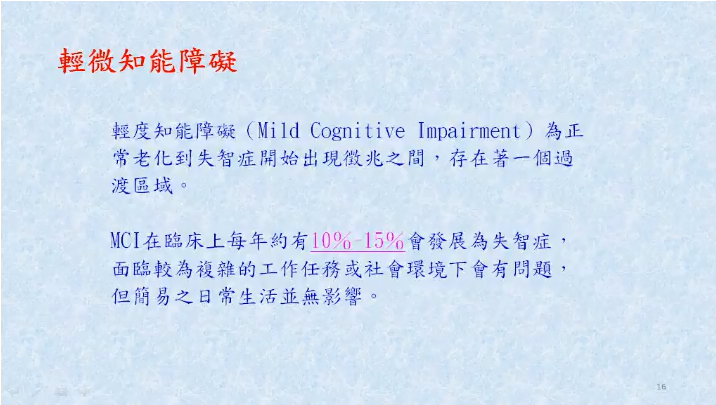
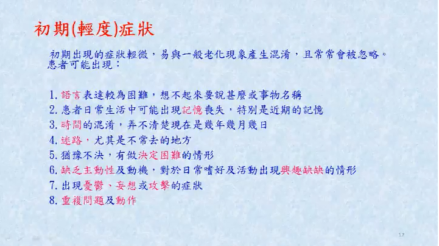
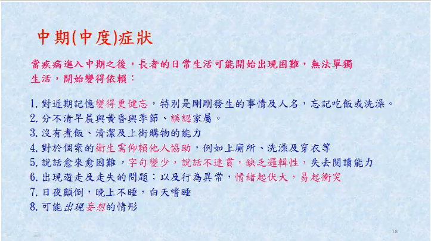
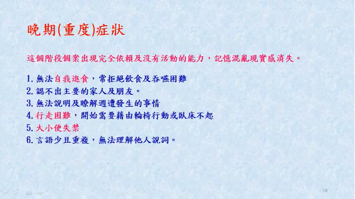
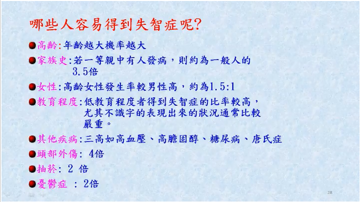
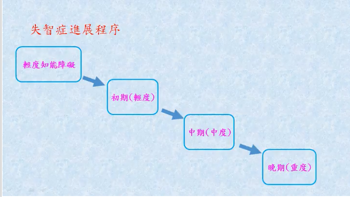
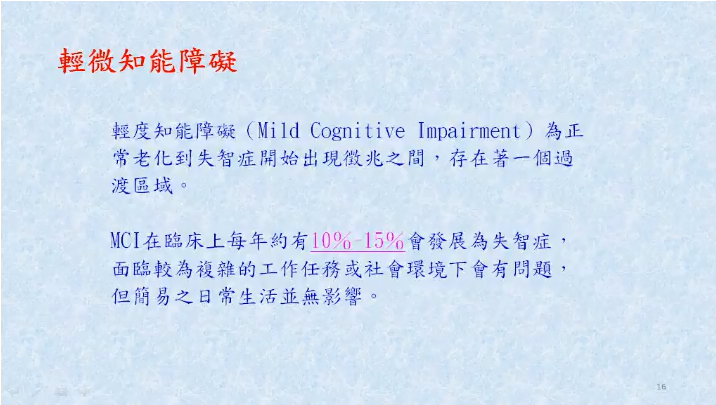
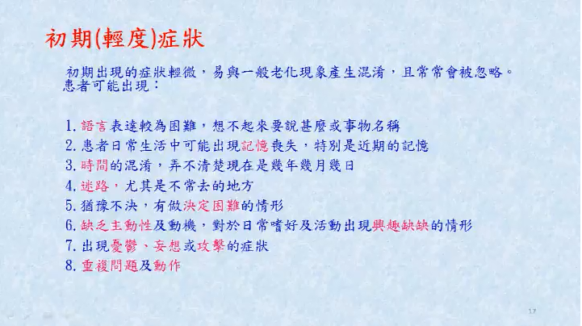
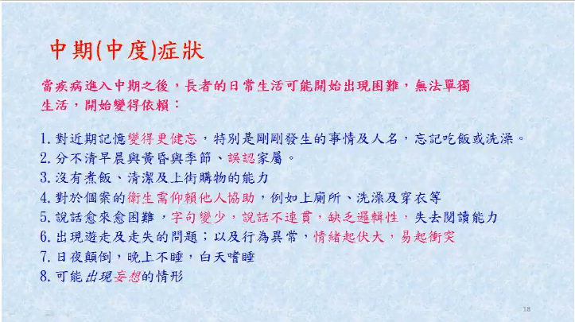
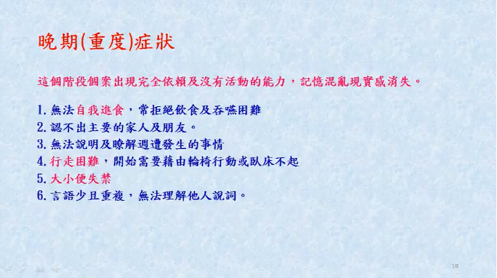
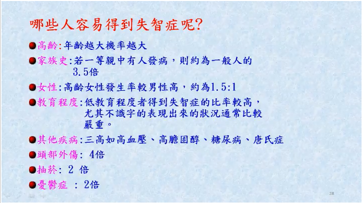

阿茲海默症
阿茲海默症佔了失智症中六到七成的成因，是一種發病進程緩慢、卻隨時間不斷惡化的持續性神經功能障礙。
在早期的病徵中，患者的記憶力會出現衰退，並對時間、地點和人物的辨認出現障礙，因為阿茲海默症初期，便是以掌管記憶的海馬迴，以及掌管人格特質的大腦皮層的神經細胞發生病變退化。
患者會在熟悉的街道上迷路，忘記經常使用的詞彙，甚至逐漸忘記自己的家人以及發生在自己身上的事。
症狀：迷路、健忘、認知功能衰退、情緒不穩、行為改變等。
lz brochure mockup final--chinese_brochure_part 1

當德國的醫生阿洛斯˙․阿滋海默(Alois Alzheimer)在1906年第一次描述這種疾病時，這種病被視為罕見的疾病。 但今日阿滋海默症是造成失智症的最常見原因，影響百分之十的六十五歲老年人，八十五歲以上的老年人幾乎有百分之五十受到影響。 阿滋海默症開始的過程，通常是漸進的，造成患者忘記最近發生的事，做熟悉的事情也會產生困難。疾病進展的快慢因人而異，會造成病人迷惑、個性和行為的改變、及判斷力受損。 阿滋海默症是一種造成記憶 逐漸喪失的腦部疾病。這種疾病 導致失智(dementia)-- 心智功能 （思考、記憶、和合理推斷）嚴 重喪失以致影響到日常生活。
康寧醫院官網

阿茲海默症 (Alzheimer‘s disease) 是老年失智症的各類型中，最普遍的一種形式。 症狀來自於腦部控制思考，記憶及語言區域的神經元，產生退化性的影響。 研究指出，基因在阿茲海默症的成因中，扮演重要的角色。由阿茲海默症的遺 傳原因顯示，分為兩大模式。 占較少比例的突變基因，如澱粉樣蛋白前驅 蛋白 (APP; amyloid precursor protein)、早蛋白一號 PSEN1 (presenilin 1) 及早蛋白二號 PSEN2 (presenilin 2)，主要與小於60歲，早年家族性阿茲海默症的發生有關。 占大多數的變異基因，如E型載脂肪蛋白基因 APOE ε2 (apolipoprotein E gene 對 偶ε2型) 及 APOE ε4與大於60歲，晚發性阿茲海默症的發生有關，也是一般最普遍型 的阿茲海默症
Alz brochure mockup final--chinese_brochure_part 1
記憶喪失不是老化的正常現象嗎？
有些是有些不是。
每個人都曾經有過忘記汽車停放在哪裡、或忘記某位相識者的名字的時候。許多健康的正常長者在年紀大的時候較不容易記住某些資訊。阿滋海默症患者的症狀
遠比這種一時想不起來的情況要嚴重多了。阿滋海默症的症狀影響到溝通、學習
、思考、推斷能力，對工作及社交生活都可能會產生影響。
*早期阿爾茨海默氏病
• 難於想起近期的事情和談話
• 難於記住月份或星期
• 失去理財能力
• 置身於社交環境之外，冷漠置之
• 做飯和購物變得越來越困難
• 判斷力差 – 難於做出明智的決定
• 容易遺失物品
• 在熟悉的環境中也可能迷失方向
*中期阿爾茨海默氏病
~出現行為困難
• 易怒、多疑、反應過度和偏執狂（認為家庭成員偷錢，或者配偶有不忠行為等）
• 神志恍惚
• 反復提問或口中總是念念有詞
• .夜貓子（即晚上不知疲倦、興奮異常）
• 懼怕洗澡
• 幻覺
• 進食困難
• 失禁
• 聚集儲藏物品
• 性行為異常
• 暴力行為
• 從需要別人幫助選擇衣服
*晚期
• 不能溝通
• 不能辨認人、地點和物體
• 不能照料自己
• 喪失行走能力
• 喪失微笑能力
• 肌肉可能萎縮
• 吞咽可能困難
• 可能發生癲癇
• 體重下降
• 大部份時間用於睡眠
• 可能表現出需要吮吸物品
• 失禁
Alz brochure mockup final--chinese_brochure_part4/p>
溝通上的轉變
與患者溝通的人會發現有以下異常的情況:
•很難找到合適的字句
•使用詛咒的字句
•重覆使用熟悉的字句
•言語不多
•有困難將字句邏輯地組合起來
•時常需要依靠非言語的姿態去表達
加強溝通的一些有效方法:
如何做一個較好的傾聽者
•‧要有耐心和支持
讓患者知道您是在傾聽著他們，同時試圖理解他們所說的。
•‧給予安慰和自信
假如患者有困難來表達他們自己，讓他們知道他們的表
現已經是很好了。並且鼓勵他們繼續解釋他們的想法。
•‧切勿爭論
假如患者說出您不同意的話，就讓他說。與他爭論只會使事件更惡化。
•‧鼓勵他們使用非言語的姿態來溝通
假如您不明白他們所說的話，請求他們用手勢來表示或用姿態來表達。
•‧講話要緩慢和清楚
講話時要注意速度和清晰度。
•‧耐心地等候回應
失智症患者需要更多的時間去處理您的要求。需要您給他們多一點時間以回應您的疑問。
•‧重覆提出信息或問題
假如他們沒有回應，請您稍待片刻後再次提出問題。
請仍使用如前的相同語句提出問題。
•‧把問題轉換成答案
試圖提供答案而不是問題。
例如，您可以說:“浴室就在這裏。＂用以替代“您是否需要使用浴室?＂的提問。
•‧給予視覺上的提示
以手指點、觸摸或示範工作向患者表明您的請求。
Alz brochure mockup final--chinese_brochure_part 3/p>
**照護者壓力的十個徵兆
太多壓力對於您和您所照顧的病人都造成傷害。
下面所列的壓力指標，如果經常出現或同時出現，可能會導致嚴重的健康問題。
學會辨認出您自身的壓力徵兆是很重要的。
好好的照顧您自己會使您成為更有效的照護者。
1.否認
此疾病及其對於病者的影響。
「我知道媽媽會好起來的。」
2.憤怒
對阿滋海默症病者或其他人感到憤怒；對目前沒有有效或徹底根治的方法感到憤怒；對其他人的不諒解而感到憤怒。
「要是他再問一次同樣的問題，我就要尖叫了！」
3.退縮
不再和朋友交往或參加以前喜歡的活動。
「我不再喜歡和鄰居聚在一起了。」
4.焦慮
對於新的一天和未來可能發生的事感到慮。
「當他需要的照顧超過我的能力時怎麼辦？」
5.沮喪
開始破壞您的士氣並影響您應付處理事情力。
「我不管了。」
6.精疲
力盡令到日常生活的必需工作也幾乎無法完成。
「我太累了，做不了這件事。」
7.失眠
由種種無休止的憂心事情所造成。
「要是她漫遊到屋外或跌倒受傷怎麼辦？」
8.煩躁
易怒導致情緒不穩並引發負面的反應。
「別管我！」
9.注意力不集中
使熟悉的工作做起來份外困難。
「我太忙了，我忘了我們約定的時間。」
10.健康問題開始在精神和身體上造成傷害。
「我想不起來上次感覺很好是什麼時候了。」
如果您經常感受到以上好幾種的壓力徵兆，您就應該去看醫生，並採用下頁的步驟來幫助您處理生活上的壓力。
科技新報/p>
從 2016 年迄今，研發治療阿茲海默症的大藥廠，連番遭逢重挫。先是耗時 25 年進行超過數千人臨床實驗的禮來，三度挑戰阿茲海默症治療失敗，但最致命一擊的是，2016 年 11 月宣布治療輕度阿茲海默症的新藥「Expedition 3」3 期臨床實驗失敗，其單株抗體藥物無法有效延緩阿茲海默症之認知行為的惡化。 在累積了 15 年的臨床 3 期慘敗經驗後，產官學界決定重新好好認識這個疾病。除了 FDA 將積極協助藥廠研發外，由國衛院老年研究所（NIA）與阿茲海默症協會（AA）所成立的專家小組，也提出這個研發領域的新指引方向：以找出阿茲海默症病程各階段生物標記，為目標的研究架構。 正當許多科學家還在實驗室內與類澱粉蛋白、tau 蛋白纏鬥時，也有人相信阿茲海默症有其感染源，並暫時為這「未知的病原」起了一個名字：「The Alzheimer’s Germ」。有志之士 Leslie Norins 博士更是以 100 萬美元「懸賞」這個病原：只要有任何研究能提出有說服力的證據，說明阿茲海默症確實是由某種病原所引起，就能領走獎金。 美國總統川普一直以來都很關注阿茲海默症疾病，也經常捐贈資金幫助相關單位，因為他父親 Fred Trump 過世的前 6 年，就是深受阿茲海默症之苦。市場分析師認為，柯林頓任內完成「人類基因計畫」的成果，歐巴馬則是提出「精準醫療」與癌症「登月」計畫，川普也許會以解決人類世紀謎病阿茲海默症而努力，有機會成為他任內的重要政績。
2015年全球失智症報告
•根据世界卫生组织报告显示，中国老年失智症人数居世界首位。
•2000年有510万人患失智症，到2010年时有960万人患病，几乎是2000年的两倍。
預計2020年达到1410万人，2030年达到2330万人，给中国经济负担带来高达1142亿美元。
•国家自然科学基金委员会指出
-阿尔茨海默症（Alzheimer’s disease, AD)是老年人群健康的重要威胁。
-随着人口老龄化进程的加快，不仅引发了严重的社会问题，还给患者家庭带来了沉重的负担。
-阿尔茨海默症是老年失智症最常见类型，严重影响老年人的健康，已经成为老年人第六大死亡原因。
-目前中国65岁以上老年人中有900万患有失智症，随着人口老龄化的加速，患者数量将持续攀升。

•根据世界卫生组织报告显示，中国老年失智症人数居世界首位。
•2000年有510万人患失智症，到2010年时有960万人患病，几乎是2000年的两倍。
預計2020年达到1410万人，2030年达到2330万人，给中国经济负担带来高达1142亿美元。
•国家自然科学基金委员会指出
-阿尔茨海默症（Alzheimer’s disease, AD)是老年人群健康的重要威胁。
-随着人口老龄化进程的加快，不仅引发了严重的社会问题，还给患者家庭带来了沉重的负担。
-阿尔茨海默症是老年失智症最常见类型，严重影响老年人的健康，已经成为老年人第六大死亡原因。
-目前中国65岁以上老年人中有900万患有失智症，随着人口老龄化的加速，患者数量将持续攀升。
今天（2018年9月21日）是第25個“世界阿爾茲海默症日”，今年這一天的主題是：記憶3秒鐘（Every 3 Seconds）。中國目前患有阿爾茲海默症的人數達到900萬，位列世界第一。65歲以上人群阿爾茲海默症發病率為5%-7%，80歲以上人群發病率為20%，平均生存期為5.9年。阿爾茲海默症是威脅老人健康的“四大殺手”之一。
青岛是全国老龄化发展速度快、基数大、高龄化突出的少数城市之一。据市老龄部门统计，2017年底，60岁以上户籍老年人口达176万，占总人口21.9%，这其中，约有30万失能失智老人，他们大多衰老与疾病并存，生活不能自理。去年1月，针对失智老人照护难问题，我市试点将失智老人纳入长期护理保险保障范围，设立“失智专区”。一年多来，“失智专区”不仅解决了重度失智老人“医院不能养、养老院不能医”的两难困境，也让他们的家庭得以喘息，缓解了长期照护的身心负担。
省政府新闻办举行新闻发布会，介绍山东省老年人口信息及老龄事业发展有关情况 山東省有60岁及以上老年人的家庭中，“空巢”家庭比例的高达60.4%。其中，单身老人户数占比22.1%，只有一对老年夫妻的户数占比38.4% 从60岁及以上老年人口健康状况自我评价来看 -自认为身体健康的老年人口占比48.7%，较2010年下降3.4个百分点 -基本健康的老年人口占比33.9%，提高0.8个百分点 -不健康，但生活能自理的老年人口占比14.6%，提高2.5个百分点 -生活不能自理的老年人口占比2.8%，提高0.1个百分点。 山東省城鄉失能半失能老年人超過240萬，占老年人口總量的12.8%。 山老年人口中，80歲及以上高齡老年人占14.4%,而高齡老年人口中失能半失能比率達到38.33%東省。 「十三五」期間,山東省每年增加近16萬高齡老人,預計2020年高齡老人規模超過310萬。老年人口特別是高齡老人和失能半失能老年人的增長,意味著長期照護需求的增加,成為山東省應對人口老齡化問題的重點和難點。
大眾日報
老年人口特別是高齡老人和失能半失能老年人的增長,意味著長期照護需求的增加,這是我省應對人口老齡化問題的重點和難點。 第四次全國老年人生活狀況調查顯示,山東省城鄉失能半失能老年人超過240萬,占老年人口總量的12.8%。山東省老年人口中,80歲及以上高齡老年人占14.4%,而高齡老年人口中失能半失能比率達到38.33%。“十三五”期間,山東省每年增加近16萬高齡老人,預計2020年高齡老人規模超過310萬。老年人口特別是高齡老人和失能半失能老年人的增長,意味著長期照護需求的增加,成為山東省應對人口老齡化問題的重點和難點。
•2017年台灣失智人口約27萬人
_2017年12月，65歲以上失智人口有259,013人
_合計30-64歲失智症人口，推估台灣失智人口共271,642人
_佔全國總人口1.15%
•65歲以上老人每13人就有一個失智者
•失智人口約27萬人，僅有6.2%接受專業照護，近50%都是由家人照顧
•2015年時台灣花了70億美元（約新台幣2000億）在失智症醫療、照護等。
•未來20年失智人口將會以每5年1%的速度增加
•到2031年時會有46萬人失智、到2061年時則會有85萬人失智
台灣失智症協會理事長賴德仁表示，年紀越大就越容易罹患失智症，從65至69歲3.4%的發病率，到90歲後發病率增加至37%，隨著平均壽命延長，未來20年失智人口將會以每5年1%的速度增加，也就是到2031年時會有46萬人失智、到2061年時則會有85萬人失智。
【大紀元2018年09月20日訊】（大紀元記者郭曜榮綜合報導）行政院長賴清德20日表示，目前台灣失智症人口推估已超過27萬人，預估15年後失智症人口更將增加到46萬人，衛福部今年至明年將投入新台幣90億元，積極推動失智症防治照護，未來也將把失智症列為公共衛生優先任務。 據世界衛生組織全球失智症報告指出，全球每年有990萬人罹患失智症，平均每3秒就新增一名患者。賴清德指出，因為失智症具有照護負擔高及醫療利用率高的特性，對社會及家庭的衝擊相當大，也對國家經濟發展及勞動力帶來負面影響，是亟需重視的嚴肅課題。
衛生福利部蔡淑鳳司長 護理及健康照護司簡報
TVBS新聞網
臺灣失智人口：
2017年失智人口約27萬人，約每100人當中就有一人罹患失智症
臺灣失智症協會依據國家發展委員會之全國總人口成長中推計
2031年失智人口逾46萬人，每100位臺灣人有2位失智者
2041年失智人口逾66萬人，每100位臺灣人有3位失智者
2051失智人口逾81萬人，每100位臺灣人有4位失智者
2061失智人口逾85萬人，每100位臺灣人有近5位失智者
未來的45年中臺灣失智人口數以平均每天增加35人
每40分鐘增加1位元失智者的速度成長
台湾失智老人人口： 2017年底65岁以上失智人口达259,013人 失智人口中约96%是65岁以上的老人 台湾失智症协会资料显示，失智症盛行率： 65～69岁为3.4% 85~89岁达21.92% 超过90岁以上，高达36.88%。 随着年龄上升，罹患失智症越来越高 65岁以上老人每13人就有一个失智者 80岁以上的老人，每五名就有一名失智
本報濟南5月24日訊今天,省政府新 聞辦舉行新聞發布會,介紹山東省老年人 口信息和老齡事業發展情況。記者從會上 獲悉,2017年,我省60歲及以上老年人口達 到2137.3萬人,占總人口的21.4%,高出全國 平均水平4個百分點;65歲及以上老年人口 達1399.8萬人,占總人口的14%,高出全國 平均水平2.6個百分點。
目前,我省老年人口的年齡結構以低 齡老年人(60-69歲)為主。在老年撫養比 (老齡人口和勞動人口的比例方面,全省 65歲及以上老年撫養比為20.3%,比2010年第六次人口普查時提高了7個百分點。與全國平均水平相比,我省人口老齡化形勢更 加嚴峻,社會養老負擔偏重。 省老齡辦黨組書記、主任丁希濱介紹, 我省17個設區市中有12個市的老年人口比
例超過20%。在城鄉分佈方面,我省城鎮老 年人口為1066.83萬,占全部老年人口的 49.9%,略低於農村。在有60歲及以上老年 人的家庭中“空巢”家庭比例達到640.4%。
1994年,山東0歲以上老年人口達899 萬,占全省總人口的10.37%,我省正式進入 人口老齡化社會。2016年底,山東80歲以上 老年人口首次突破2000萬,標志著我省進 入中度老齡化社會。依據老年人口比和老 年撫養比兩個指標測算,從2021年開始到 2030年,我省老年人口將迎來第二個增長 高峰。人口老齡化從2021年開始加速發展, 2025年的歲及以上老年人口達到18%左右, 2030年達到21.3%,進入深度老齡化社會; 2023年前後,老齡人口將超過少兒人口(0~14歲)。隨著我省進入中度老齡化社會,人 口結構變化將對經濟社會發展產生影響。
據瞭解,去年全省建成並投入使用的 養老服務機構共有2031家,各類養老床位70萬張;279家公立醫院開設了老年病科,58家設立去年就醫綠色通道,開展醫療服 務的養老機構達1200餘家,納入醫保定點 的有110家;省財政下撥養老服務業發展專 項資金4.43億元,並為0歲以上納入最低 保障範圍的老年人發放補貼和困難家庭失 「能半失能老年人護理補貼2.25億元。我省 多支柱、廣覆蓋、可持續的養老保障體系得 到進一步完善。
5月24日，省政府新聞辦舉行新聞發布會，介紹山東省老年人口信息和老齡事業發展情況。黨報君從會上獲悉，2017年，我省60歲及以上老年人口達到2137.3萬人，占總人口的21.4%，高出全國平均水平4個百分點；65歲及以上老年人口達1399.8萬人，占總人口的14%，高出全國平均水平2.6個百分點。在老年撫養比（老齡人口和勞動人口的比例）方面，全省65歲及以上老年撫養比為20.3%，比2010年第六次人口普查時提高了7個百分點。與全國平均水平相比，我省人口老齡化形勢更加嚴峻，社會養老負擔偏重。
維基百科

痴呆症（英语：Dementia、德語：Demenz），也稱失智症，其英文Dementia一字來自拉丁語（de-意指「遠離」 + mens意指「心智」）。是腦部疾病的其中一類，此症導致思考能力和記憶力長期而逐漸地退化，並使個人日常生活功能受到影響。其他常見症狀包含情緒問題、語言問題、還有行動能力降低，但個人意識卻不會受到影響。診斷失智症有兩個要點，一是心智功能出現退化；二是退化的程度比一般老化的情形更嚴重。這些疾病也常帶給照顧者相當大的影響。
衛教專輯- 失智症十大警訊 - 臺大醫院

1.記憶減退影響到工作 : 一般人偶而忘記開會時間、朋友電話，過一會兒或經提醒會再想起來。但失智症患者忘記的頻率較高，且可能完全忘記該事件。
2.無法勝任原本熟悉的事務 : 如英文老師不知「book」是什麼；電腦網路工程師不知如何上網；計程車司機找不到油門開關；廚師不知如何炒菜等。
3.言語表達出現問題 : 一般人偶而會想不起某個字眼，失智症患者想不起來的機會更頻繁，甚至以替代方式說明簡單的辭彙，如「送信的人(郵差)」「用來寫字的(筆)」等。
4.喪失對時間、地點的概念 : 一般人偶而會忘記今天是幾日，在不熟的地方可能會迷路。但失智患者會搞不清年月、白天或晚上，在自家周圍迷路，找不到回家的路。
5.判斷力變差、警覺性降低 : 開車常撞車或出現驚險畫面；過馬路不看左右紅綠燈；借錢給陌生人；聽信廣告買大量成藥；一次吃下一周的藥量；買不新鮮的食物等。
...
翻轉醫療

AD8量表助初期篩檢及發現
臺北榮民總醫院神經醫學中心一般神經科主治醫師王培寧談到，AD8量表是由家屬或同住者填寫評估，因為他們最能了解患者的情況。
填寫量表者，可透過8個與日常生活有關問題，依過去及現在改變狀況評估，若有2項以上勾選為「是」，則建議被評估者應到醫院的神經內科，或精神科接受進一步檢查，目前國內老人健檢也是使用該量表。
台灣失智症協會

在逐漸邁入高齡化社會，老年人口增加的台灣，失智症的人口也快速上升。失智症的症狀並非同時一起發生，而是在生活中一點一點慢慢地出現，初期若非特別留意，很容易被誤認為一般老化而延誤就醫。臨床上大多數失智患者是自己本身或是身邊的親友先發現的，若社會大眾能透過 『AD-8極早期失智症篩檢量表』 ，熟知失智症的早期症狀，即可讓更多病患在極早期就獲得治療與幫助。
AD-8量表用於民眾自我評估、專業人員親自詢問或電話中作答。在回答問題上，家屬應該依照患者過去與現在改變的狀況來考量，而患者本身也需依照自己過去與現在改變狀況來回答，而不是以自己目前的平常表現及來回應。 AD-8量表提供極早期失智症的篩檢，其中最主要的包含了阿茲海默症、血管性失智症等較常見的疾病症狀。 在計分時是以【是，有改變】當做計分的依準，若您以前無下列問題，但在過去幾年中有以下的『改變』，請勾選【是，有改變】；若無，請勾【不是，沒有改變】；若不確定，請勾【不知道】。

上述測驗是取自美國老年醫學會製作的簡易心智狀態問卷調查表，臨床上我們又稱為SPMSQ，透過簡單的量表檢視受測者的心智狀態，並且有效率地診斷失智症。
另外，要提醒大家，只要你或家中長輩超過65歲，患有心臟疾病、糖尿病、三高、帕金森氏症、中風或失智症家族病史，每年都建議做一次，這樣才能及早發現，及早治療！
當然，一般人也千萬別忽視這個問題，當你還在懷疑自己到底是健忘還是失智時，放下手邊工作，花三分鐘測測看吧！其實，失智症並不可怕，可怕的是你把它視為正常老化，而忽略了它的存在！
天主教失智老人基金會

AD8極早期失智症篩檢量表
可詢問長者之親屬或照顧者，近幾年來當事人是否常常出現以下情況，並記錄下來，以判斷其是否需要接受診療。
天主教失智老人基金會
AD8極早期失智症篩檢量表
可詢問長者之親屬或照顧者，近幾年來當事人是否常常出現以下情況，並記錄下來，以判斷其是否需要接受診療。
台灣失智症協會

這是一個半結構式訪談。請發問所有問題。如有需要，發問其它問題來決定參與者的CDR。請記錄發問其它問題時所獲取的有關資料。

聯合國官網

全球人口正步入老齡化階段。世界上幾乎每個國家的老齡人口數量和比例正在增加。人口老齡化有可能成為21世紀最重要的社會趨勢之一，幾乎所有社會領域都受其影響，包括勞動力和金融市場、對住房、交通和社會保障等商品和服務的需求、家庭結構和代際關係。
《世界人口展望：2017年修訂版》的數據顯示，到2050年，60歲及以上人口數量將增長兩倍多，到2100年將增長三倍以上，由2017年的9.62億上升至2050年的21億和2100年的31億。全球60歲及以上人口增長速度超過年輕群體。
全球60歲及以上人口增長速度超過年輕群體。
2017年，全球60歲以上人口約9.62億，佔全球人口13%，且每年以3%左右的速度增長。目前，歐洲60歲及以上的人口所佔比例最大（佔25%）。快速老齡化的問題在世界其他地區同樣存在。到2050年，全球除非洲以外所有地區60歲及以上人口將接近甚至超出三分之一。全球老齡人口數量在2030年將達14億，2050年達21億，2100年上升至31億。
到2050年，全球80歲及以上人口數量預計增長三倍，即從2017年的1.37億增長至2050年的4.25億。到2100年，將增長至9.09億，是2017年的近7倍。
長照2.0政策

台灣65歲以上老年人口占總人口比率在今（107）年3月底達到14.05％，也就是說，7個人中就有1個是老人，臺灣正式宣告邁入「高齡社會」，如何維護高齡人口的生活品質與尊嚴，以及因應老化社會帶來的青壯年照顧及扶養負擔加重和少子化現象，是政府持續努力的重要目標。
國家發展委員會

人口為國家構成的基本要素之一，人口數量及年齡結構的變化為決定國家發展的重要關鍵。為了解未來人口發展趨勢，以做為政府相關機關在擬定人口、教育、勞動力、產業發展、都市住宅、社會服務及醫療服務等相關政策之規劃依據，本會每2年根據最新人口、出生、死亡及遷徙等相關統計資料，修正未來人口推估值。
人口數量與年齡結構之變遷，在長期方能顯現。當前我國所面臨之人口高齡少子化趨勢，即反映過 去長久以來整體經社環境演變下，國人在婚育、死亡、遷徙等方面改變之結果；而下一世代之人口數量及其年齡結構，亦取決於這一世代出生、死亡及遷徙人數。人口問題改善非一蹴可及，為觀測本世代之生育水準對下一世代人口由幼年至老年時期之年齡結構變化，以及早思考、因應我國未來所需面對的人口重要議題，本報告推估未來約50年左右之人口數，推估期間為2018年至2065年。
焦點新聞 今周刊994期

台灣在二○一八年，就會進入「高齡社會」，二○二五年，進入「超高齡社會」。在這個最關鍵的老化階段，我們只有七年的時間，速度堪稱世界第一！也就是說，剩下不到十年的時間，我們就會進入超高齡社會。和其他國家比起來，我們就像一夜白髮，手足無措。
中華民國內政部官網

我國65歲以上老年人口占總人口比率在今（107）年3月底達到14.05％，也就是說，7個人中就有1個是老人，臺灣正式宣告邁入「高齡社會」，如何維護高齡人口的生活品質與尊嚴，以及因應老化社會帶來的青壯年照顧及扶養負擔加重和少子化現象，是政府持續努力的重要目標。
內政部表示，根據世界衛生組織定義，65歲以上老年人口占總人口比率達到7％時稱為「高齡化社會」，達到14％是「高齡社會」，若達20％則稱為「超高齡社會」，我國老年人口比率在82年便超過7％，進入高齡化社會，而後受到戰後嬰兒潮世代陸續成為65歲以上老年人口影響，我國老年人口自100年起加速成長，並於去(106)年2月首度超過幼年人口（老化指數達100.18），直至今年3月，我國65歲以上老年人口占總人口比率達14.05％，正式邁入高齡社會。
慧雅人生

就中國的人口現狀、存在的問題及可能的政策應對，《中國新聞周刊》近日專訪了中國社會科學院人口與勞動經濟研究所所長、中國人口學會副會長張車偉。“中國的生育率下降太快”中國新聞周刊：目前，中國的老齡化程度處於什麼水平？從全國整體來看，呈現出怎樣的特點？
張車偉：據聯合國定義，當一個國家或地區65歲及以上老年人口數量佔總人口比例超過7％時，就意味著這個國家或地區進入老齡化社會。2017年，中國人口中65周歲及以上人口15831萬人，佔總人口的11.4％。60周歲及以上人口24090萬人，佔總人口的17.3％。
中國的老齡化程度現在還不算特別嚴重，但是老齡化的速度卻是全世界最快的。發達國家老齡化進程一般長達幾十年，甚至100多年。例如，法國用了115年，瑞士用了85年，英國用了80年，美國用了60年，而中國祇用了18年。並且據聯合國預測，1990年至2020年世界老齡人口平均年增速度僅為2.5％，而同期我國老齡人口的遞增速度為3.3％。並且一直在加速，越來越快。
中國新聞週刊

就中國的人口現狀、存在的問題及可能的政策應對，《中國新聞周刊》近日專訪了中國社會科學院人口與勞動經濟研究所所長、中國人口學會副會長張車偉。“中國的生育率下降太快”中國新聞周刊：目前，中國的老齡化程度處於什麼水平？從全國整體來看，呈現出怎樣的特點？
張車偉：據聯合國定義，當一個國家或地區65歲及以上老年人口數量佔總人口比例超過7％時，就意味著這個國家或地區進入老齡化社會。2017年，中國人口中65周歲及以上人口15831萬人，佔總人口的11.4％。60周歲及以上人口24090萬人，佔總人口的17.3％。
中國的老齡化程度現在還不算特別嚴重，但是老齡化的速度卻是全世界最快的。發達國家老齡化進程一般長達幾十年，甚至100多年。例如，法國用了115年，瑞士用了85年，英國用了80年，美國用了60年，而中國祇用了18年。並且據聯合國預測，1990年至2020年世界老齡人口平均年增速度僅為2.5％，而同期我國老齡人口的遞增速度為3.3％。並且一直在加速，越來越快。
中時電子報 旺報

根據聯合國統計，全球人口已突破75億，其中老人人口（60歲以上）就有近10億，約占總人口的12.8%，不過，大陸的老年人口問題更嚴重，不僅人數已高達2.4億，占總人口比重17.3%，占全球老年人人口的25%，等同全球有1/4的老年人口集中在中國大陸，估計到2035年，將會突破4億大關，占總人口近3成比重，顯見老年人口問題將成為大陸當局未來亟須解決的嚴肅課題。
大陸不僅要面對出生率日趨下滑的走勢，更要面臨日益嚴重的老年問題，而這個問題不單是中國大陸要頭疼，全球都要傷腦筋。據聯合國公布最新數據顯示，截止到2018年7月11日，全球人口數量介於75億至76億，其中，老年人口計約有9.62億，占全球總人口的比重約為12.8%。預估到2050年全球人口數量將達到98億，其中老年高達31億。
5月24日，山東省政府新聞辦舉行新聞發布會，介紹山東省老年人口信息和老齡事業發展情況。黨報君從會上獲悉，2017年，山東省60歲及以上老年人口達到2137.3萬人，佔總人口的21.4%，高出全國平均水平4個百分點﹔65歲及以上老年人口達1399.8萬人，佔總人口的14%，高出全國平均水平2.6個百分點。在老年撫養比（老齡人口和勞動人口的比例）方面，全省65歲及以上老年撫養比為20.3%，比2010年第六次人口普查時提高了7個百分點。與全國平均水平相比，山東省人口老齡化形勢更加嚴峻，社會養老負擔偏重。
據悉，山東省17個設區市中有12個市的老年人口比例超過20%，已進入中度老齡化社會。老齡化程度最嚴重的是威海市，老年人口比例達27.8%﹔其次為煙台市的27%﹔第三是日照市的23.3%。老齡化程度最低的是聊城市，老年人口比例為18.4%。

內容學者認為國內長照服務發展20多年，但對於長照想做到什麼程度仍無目標。沈君帆、侯世駿攝 馬政府時代曾規劃長照保險制度，透過類似健保模式來執行長照政策。蔡政府上任後推長照2.0則採稅收制，但長照主要財源的菸稅、遺贈稅收入不穩定，去年稅收115億元， 還不到原先預估值296億元的一半。衛福部表示，現階段國內長照量能仍不足，談是否回到長照保險制仍言之過早。行政院政務委員林萬億表示，推動稅制挹注長照財源方向不 變，菸稅、遺產稅、房地合一稅等指定稅收，今年1月挹注長照經費為28.33億元，以此推算，有達到長照一年300多億元經費目標，因此目前財務狀況並無問題。林萬億說，荷 蘭、日本、德國等少數國家使用保險制，易走向機構化、醫療化，進而衍生一條龍的商業導向經營模式等，與在地老化、社區化的政策目標背道而馳。衛福部次長薛瑞元說， 保險制須全民強制納保，對使用需求期待也相對提高，現階段國內長照量能仍不足，談長照保險制仍言之過早。成功大學老年研究所教授李世代認為，國內長照服務發展20多 年，但對於長照想做到什麼程度的服務、花多少錢，都沒有目標，建議政府應詳盡調查長照需求量，才能讓錢花在刀口上。
新北報導

新北市今年推動六日獨居老人送餐，造福更多獨居長者，圖為獨居長者送餐場景。（本報資料照片）
新北市獨居老人送餐服務行之有年，過去供餐以周一到周五，今年擴大到六日也可以供餐，預計將增列2000萬經費，預計全市3500名獨老都可受惠，落實老人福利政策。
新北市社會局針對滿65歲以上的低收且獨居的老人，結合民間單位和公所開辦送餐到府服務，以往供餐狀況因地而異，一周5至6天，每天1到2餐，為了提供長者更好的照護，
2018年起新北市將餐數和天數拉長，長者天天都能吃到溫熱便當。新北市社會局老人福利科長鄭淑敏表示，獨老送餐服務目前委託各區公所及18家居服單位辦理，今年起周六
日將透過送餐或是代餐方式，讓長者可以在家自行加熱用餐，因應新政策上路，也增列2千萬經費，讓獨老們享有更好的照護。鄭淑敏進一步指出，補助對象以65歲以上、設
籍新北市的低收及中低收的獨居失能老人為主，經由訪視評估後列冊關懷。另外，社會局也推出「愛心換燈泡」、「檢查老舊線路」等服務，期盼藉此提升銀髮族住宅安全。
長期承攬送餐業務的樹林區東陽里長林耿邦表示，送餐幾乎是全年無休，雖然是以做公益為出發點，但送餐志工也需要休息，期盼有相關配套措施，別讓社福美意打折。外界
常以為送餐利潤高，但近年菜價漲，加上人數不多成本難壓低，多仰賴善心人士贊助，希望未來能「微調」經費，至少不用賠錢做愛心。
即時報導
北台灣銀髮族出現移居潮，移入地點以桃園市最熱，新北市居次。 聯合報系資料照官方統計數據顯示，北台灣銀髮族出現移居潮，移入地點以桃園市最熱，新北市居次。 內政部根據戶政和衛福部資料，每季統計65歲以上老人人口與家戶數變動，至去年第三季，全台老人已達321萬人，其中，家裡成員都在65歲以上的老人戶，較前一年增加8.7% ，達48.7萬戶，已逼近50萬戶。觀察各縣市老人戶增加情況，桃園市老人戶增加速度最快，去年第三季年增幅12%，已連續12季年增幅位居全台之冠，且均在兩位數以上，最高 達15%， 目前桃園全市老人戶已達3.3萬戶。新北市老人戶年增幅緊追在後，排名全台第二，也已連續4季年增幅在兩位數以上，目前全市共有8.8萬老人戶，全台最多。 北台灣台北市、基隆、宜蘭、新竹、苗栗等，老人戶雖也持續增加，但增幅都低於平均值，其中又以基隆年增幅最少。台灣房屋智庫發言人張旭嵐表示，數據顯示，北台灣不 僅青壯年考量房價、工作，出現移民風，銀髮族也有明顯移居現象；房價高低、居住品質，生活成本，醫療資源、福利政策以氣候環境，則決定了銀髮族落腳的地點。以最受 銀髮族青睞的桃園來說，目前平均房價一坪16萬元上下，不少台北市，或新北市一級房市區銀髮族把公寓賣掉，移居桃園買電梯宅，不僅換得更舒適的生活空間，手上還可多 出一筆錢養老。張旭嵐表示，前兩年台北市砍掉老人津貼的同時，桃園市對長者的三節、重陽節敬老金，提高到每年可領取9500元，為六都之最，優渥的福利政策，加上高鐵 和機捷通車後交通便利，子女探親容易，研判也吸引不少老夫老妻移居桃園。張旭嵐分析，新北老人戶年增率僅次於桃園，房價亦是重要因素。市況顯示，近年許多台北市銀 髮族賣掉北市住宅， 移居三峽北大、林口新市鎮，三重重陽等生活機能成熟，但房價相對便宜的重畫區。張旭嵐說，台北市老人戶年增率低，除了不少銀髮族移居外地因素外 ，北市房價高，子女買房門檻高，不少人成年後還是會選擇靠爸靠媽一起居住，可能也是主因之一。
長照2.0上路超過1年，陸續有新制度、創新服務上路，也有制度「邊做邊改」，衛福部長陳時中樂觀表示「今年會是長照起飛年」。但包括財源不穩、人力不足的聲卻始終未消失，今年元旦上路 、衛福部稱能提高照服員薪資的「新新制」支付制度，更遭第一線服務機構重批「倉促上路」，衛福部勢必要更加把勁，長照才能順利起飛。而目前1966長照服務專線即日起正式開通，民眾想了解 申請長照的大小事，可撥打「1966」解惑。賴揆在去年1966長照專線開通記者會上，因「功德說」引發討論，也讓衛福部趕緊喊出替照服員加薪緩頰，並於今年元旦推出「新新制」支付制度，讓長照服務從過去的計時制，改為以各項服務作基準的計次制。 「新新制」元旦上路，各地衛生局、長照機構只有不到1周時間準備，遭外界質疑是為盡快淡化賴清德的「功德說」效應。 新制為照服員加薪反應不一，第一線服務機構指出，因服務型態改變，有個案認為變貴，進而減少服務量，「當機構收不到給付，何來加薪一說」？衛福部畫出月薪3萬多的大餅，屆時若真的給不出這薪水，照服員要怪機 構還是衛福部？ 薪水不高、工作有職業傷害疑慮、社會地位仍待提升，使得現僅9000多名照服員投入長照，人力缺口估1萬人，但長照2.0上路至今，政府拋的甜頭「不甜」，對於畢業的大學生，若和其他工作的薪資差異不大，難吸引人力投入。 為求在地老化，長照2.0推出ABC「社區整體照顧模式」，也無法涵蓋民眾需求。牛湄湄律師與其先生兩人，分別收掉律師事務所及診所；蔡銀純辛苦照護師大副教授劉海波，就是因長照2.0對失智、失能重症長輩的關照，缺了很大一塊，經費不足自是主因。 長照2.0以稅收制作為財源，並於去年納入「菸稅」和「遺贈稅」，儘管去年整個下半年只收53億元，衛福部仍對今年「全年可收296億元」抱持樂觀，姑且不論能否收足，光是遺贈稅屬於機會稅、菸稅是為了抑制吸菸人口這2點，就讓外界難以釋疑，一旦稅收制財源將無法滿足需求，是否最終要走上保險制一途？ 衛福部更喊出2020年要布建完2500個「預防及延緩失能照護據點」，兩者均和負責「健康促進」的衛福部國健署角色重疊，如何讓三者分工更明確、資源不重複使用，是衛福部大課題。
HiNet報導

全國首座結合圖書館的長照服務機構「連瑪玉學苑日間照顧中心」26日在彰化縣大村鄉啟用，整合醫療與社區服務，提供完善連續性長期照護服務，更能照顧社區民眾在地安老，共同營造長照友善城市。 彰化縣長魏明谷表示，全臺灣失智的人口約24萬人，而彰化縣有將近1萬3,000位失智人口，這些在輕度及中度失智階段的老人，雖然四肢健全，但出門後卻不知如何回家，或是煮東西瓦斯忘了關，所以需要24小時去照顧他們，這也是長照投入人力最多、最困難的失智症照顧中心，感謝彰化基督教醫院和切膚之愛基金會成立失智日照中心。 他也與大家分享長壽的秘訣，第一、早睡早起多運動，第二、多食用蔬菜，第三、做志工，過團體的生活，延緩老化失能失智，此外，縣府實施萬人健檢，他也呼籲大家要有健康意識，並且活得健康、快樂、長壽。 切膚之愛基金會董事長陳穆寬表示，彰化縣65歲以上的人口已經達到18萬人，步入了高齡化社會，這次結合大村鄉圖書館，配合政府長照2.0政策，讓失智、失能或是年紀大的長者，獲得最好的照顧，不只是國家的責任，也是一個優良教會的責任。 切膚之愛基金會執行長詹麗珠指出，「連瑪玉學苑」結合圖書館，打造成北歐鄉村的風格，同時提供小規模多機能的服務，有四床可夜宿喘息，是一個無障礙的空間，有視聽室、互動廚房、泡腳池等，還有專業人員幫助長輩做健康促進的服務，目前已有多位長者入住，歡迎大家來預約。 配合國家的長照計畫，推動「一鄉鎮一日照中心」。連瑪玉學苑位於大村鄉圖書館2樓，打造五星級環境，以歐式田野鄉村風情，延伸家的溫馨感受，失智長輩可以獲得溫馨專業服務外，大村鄉正新輪胎營養部每天提供熱騰騰的老人營養膳食，讓優美的環境更加添無限愛的溫暖關懷，連瑪玉學苑為失智家庭提供日間照顧、居家服務、夜間住宿及其他整合性長照服務，是彰化縣首家以失智者提供小規模多機能多元服務。
大紀元 即時報導

【大紀元2018年03月18日訊】（大紀元記者李怡欣台灣高雄報導）「老老照顧」台灣未來趨勢是，世代恐面臨老人照顧更老的長輩、一樣老化的手足或另一半，對此，專家呼籲，要有心理準備，提早因應，延緩失能到來的時間，在社會層面，建構高齡友善環境，讓銀髮族能成功健康、活躍老化。 85歲老人照顧105歲人瑞 專家：雙老照顧已是未來常態 1913年出生的百歲人瑞李張肉老太太，無法獨立照料自己，由大兒子李再興接到高雄家中照顧，18年下來，母子皆長壽健康，但兒子漸漸老邁，81歲老兒子，還要照顧105歲的老老母親，實在力不從心。 老太太的3個兒子平均年齡高達75歲，兒子們出於孝心，捨不得把老媽媽送安養院，李奶奶只好在3個兒子家輪流住4個月。晚上，三兒子阿雄睡客廳照顧媽媽，白天，老母親由老婆阿珠照料。阿珠中風身體差，照顧勞累生怨，便口出惡言「活這麼老幹嘛？」夫妻倆因此爆發口角；加上，不懂老人毛病，老媽媽開始便祕、咳嗽、肚子痛，讓照顧者情緒壓力火上添油。後來，擅長網路與找資料的孫女，撥打一通1966長照專線後，一切開始改變。 避免憾事 伸手求援 「長照1966專線」 熱心的孫女看過高雄市政府官網曾介紹1966，雖然不清楚阿嬤情況，「打看看，再說！」爾後，社會局長照專員果然到宅訪視並發現，「照顧者壓力來自 缺乏照顧替代人力、對社會福利資源不了解、經濟壓力，以及照顧者自身體況不佳，又缺乏照顧知識及技巧，導致情緒負荷，也讓照顧品質低弱」。 社工訪視後，社會局啟動長照計畫，幫李奶奶申請了居家服務、喘息服務以及復康巴士，媳婦阿珠終於可放下心頭大石，同時，她也跟照服員學習到很多洗澡、通便、攙扶等技巧，不再口出惡言，久違的笑容也回來了。 面對雙老未來 你可以即早應戰 雙老議題是必然現象，不須過度驚慌！高雄醫學大學醫學社會與社會工作系副教授陳政智表示，老化會從衰弱、亞失能到失能期三階段，要如何即早面對？針對健康長輩，達到「成功、健康、活躍老化」。 高雄市社會局老人福利科科長于桂蘭表示，長照2.0照顧計畫，打破「年齡限制」，放寬到49歲以下，只要領有身障手冊，經衛生局長照中心評估失能，就能啟動相關長照服務進入家庭中，全國適用對象預計從51.1萬人擴大至73.8萬人，服務項目也從8項增到17項。 另外，針對健康長輩，政府也挹注資源在幫助延緩失能，「越晚掉進長照2.0的籃子裡，對整個資源系統與社會最有幫助」政府鼓勵國人，邁入高齡、老化前期，維持社會參與，加上積極醫療與保健手段，把衰弱期拉長甚或改善，延緩失能的到來。 趁你沒衰弱前 趕快要做的事 避免措手不及就掉入失能的籃子裡。陳政智建議，現在起，要養成蒐集政府資源、日托、照顧者支持團體等「老」資訊；再來，建立「未雨綢繆」防護傘，對人生終點難以啟齒的財產與臨終議題勇敢討論。 雙老的未來，老人需照顧一起變老失能的另一半。「老伴，我雖然不能走，還是可以像年輕時，騎著車載妳兜風」。（李怡欣／大紀元） 還有，老人家要建立「生活圈概念」，像是「平常上哪買菜、社區診所看病、去哪領錢等，逼自己每天外出與人互動，善用老人優待交通工具與免費場所 （如：長青中心、老人活動中心等），千萬不要跟外界疏離，這是最大關鍵。趁還沒衰弱時，趕快提早啟動上述行動與預防，是面對雙重老化應有的概念。 勿悲觀 健康老人還是居多 其實，失能到完全依賴他人的比例沒有想像中高。陳政智說，65歲以上人口失能比例約占10%，其中，生活完全依賴他人僅占2~3%；也就是 說，100個老人中，不到3人重殘，另外97人可自立生活，因此，民眾不要自己嚇自己，或許老了有慢性病，但只要控制疾病、兩老有對外支撐系統，「面臨雙老未來沒有那麼慘」，老了活得積極快樂、有事做，才是重點。
THE NEWS LENS 關鍵評論

失智症長者無法清楚表達自己身體狀況時，如有身體不適或是昏睡、食慾不振等狀況，照護者會帶長者就醫，如果根據新症狀去看新的醫師，沒提供醫師藥物清單，很容易出現因藥物使用後出現的「串連性投藥」。
高齡患者症候群及多重用藥
老化是隨著年齡增長，無可避免的正常過程，退化則是異常狀況，兩者對健康都有影響，是在程度上的差異，當老化已經影響到個人獨立執行日常生活的能力時，即為退化，失智症即是如此。此外，長者或家人是否能適度介入，減緩老化、退化的速度，及所帶來對健康與生活的影響。在老年醫學中會以「周全性老年評估」（CGA），來對高齡者進行整體身、心、環境等評估，早期提出整合性照護計畫，以避免容易影響長者健康的多重共病、多重用藥、肌少症、衰弱、跌倒等情形，減緩老化、退化或遠離失能。
失智症不是正常老化，失智症長者無可避免要面對退化，但減緩退化退化速度若能減緩，失能的程度也能隨之減緩，這之間關鍵是「照護」，包括：生活照護及醫療照護，所以我們在失智症照護也需要認識老年醫學，經由老年醫學來提升照護品質，減緩退化。
高齡者在照護上會出現許多值得注意的特性，包括：不典型疾病症狀表現、多重共病、多重用藥、身心功能退化與失能、生理功能儲備不足、疾病恢復期較長、需要特別照護方式等，我們一般會以「高齡症候群」來觀察。
「高齡症候群」是指高齡者會出現某些難以符合個別疾病診斷的臨床表徵，是高齡者常見且會深遠影響健康上的議題，在英國稱為「高齡重大議題」（Geriatric giant incontinence），包括：無法行動（Immobility）、行動不穩（Instability）、認知障礙（Intellectual impairment），以及醫源性傷害（Iatrogenic），特別是多重用藥。
多重用藥與多重共病（Co-morbidity, multi-morbidity）息息相關，多重共病是指罹患兩種或兩種以上慢性病的人。根據衛福部國民健康署的統計，台灣六十五歲以上民眾約有三分之一罹患多重共病，慢性病盛行率為七四%，超過三種慢性病高齡者不在少數。
根據美國的研究顯示，隨著年齡的增加與失能的比例增加，老年患者有多重共病的死亡率高於無多重共病的老年患者，失能的老年患者死亡率高於無失能的老年患者。如果將兩者合而為一來看，有多重共病且失能的老年患者死亡率高於其他老年患者，所以醫學界認為預防失能在老年醫學領域中，比疾病治療還重要。
國際上文獻上也發現，八十五歲以上的長者，僅不到五%的人沒有任何慢性病。失智症已是一種慢性病，失智症長者如果還有高血壓、高血脂、糖尿病等各種會影響健康的疾病，很容易是屬於多重共病的長者，增加照護上困難度。傳統上醫療機構以器官專科的醫療模式會遭遇很大的困難，一病一醫的片斷醫療模式增加長者就醫及家屬照護的困擾，而不同專科醫師之間對於長者診治角度的差異更會使家屬照護上無所適從，長者常成為醫療人球，單科醫師無法解決時，更需要整合性醫療服務及照護。
根據二○一○年健保資料分析，台灣的長者平均一年看診約近二六．七次，三七．二%開立一種以上慢性用藥，平均使用四．五九種慢性用藥。其中使用五種以上多重用藥比例為四一．五九%，甚至八．三九%是使用十種以上慢性用藥，這些多重用藥現象容易發生「潛在不當用藥」。
「潛在不當用藥」（Potentially inappropriate medication），是指藥物的處方符合病患的病情，然而藥物服用時副作用的風險高於治療的益處。這種情形在青壯年較少發生，但長者發生藥物不良反應的機會較高，且容易出現明顯的健康風險。所以當面臨急性病症或慢性病急性發作時，高齡患者的臨床表現常是不典型且不具任何特異性。
從多重用藥的研究來看，每位長者平均每天服用四種藥物與六．四顆藥。吃兩種藥物產生副作用的機會是6%，吃五種藥物產生副作用的機會是50％，吃八種藥物產生副作用的機會是100%。
長者雖因多重共病進而產生多重用藥，開立處方的醫師若能進一步協助長者檢視藥物，也擁有影響長者健康的因素與藥物代謝特性等相關知識，才能為長者選擇有效又安全的藥物，同樣狀況也適用於手術或其他侵入性醫療行為。
建議家屬及照護者可先建立長者的藥物清單，將長者目前所服用藥物詳細列出，選擇一位對老年醫學有涉獵的醫師或藥劑師，請他協助檢視這藥物清單，就藥物類型、劑量、藥物間交互作用的風險（Drug-Drug Interactions）、藥物不良反應的風險（Adverse Drug Events, ADEs）等進行瞭解。
此外，由於老化及退化導致的影響，會對長者在藥物動力學（pharmacokinetics）與藥物效力學（pharmacodynamics）上有相當大的改變。藥物動力學是研究藥物服用後，在患者體內的吸收、分布、代謝、排泄情形，藥物效力學是指藥物對身體的影響評估（效果、副作用等），這都必須仰賴醫師及藥劑師來評估。
醫師在開立處方時，能夠注意藥物的適應症、給予患者及家屬足夠的教育、定期檢查所有用藥、即時停用不需要的藥物、在藥物治療前先嘗試非藥物的治療、儘可能降低藥物劑量、給予患長適當追蹤、儘量避免使用某些危險性較高的藥物。家屬、照護者也需有此方面用藥常識，以配合醫囑來執行用藥方式。
為何照護者對用藥方式及藥物清單等相關常識如此重要？失智症長者無法清楚表達自己身體狀況時，如有身體不適或是昏睡、食慾不振等狀況，照護者會帶長者就醫，如果根據新症狀去看新的醫師，沒提供醫師藥物清單，很容易出現因藥物使用後出現的「串連性投藥」（Prescribing cascade）。
這是指長者吃藥出現副作用後，沒有即時發現、或停藥、換藥，誤以為「藥物副作用」是新症狀，再根據新症狀看新的醫師。醫師並不瞭解原本所服用藥物情況，就新症狀開立另一種藥來治療，新加的藥也可能有副作用，甚至跟前面所服用的藥產生交互作用，導致症狀愈來愈多，長者就愈來愈不舒服，甚至衍生出精神行為症狀，家人及照護者更不易照護。
長者因老化，產生不同的生理狀況，失智症長者又因退化，衍生出更複雜的生理與心理因素，如希望有好的照護品質，照護者需要學習的知識更多，但這些知識對自己現在及未來也大有幫助。
摘要重點以多重用藥的研究來看，每位長者平均每天服用四種藥物與六．四顆藥。吃兩種藥物產生副作用的機會是6%，吃五種藥物產生副作用的機會是50％，吃八種藥物產生副作用的機會是100％。
建議家屬及照護者可先建立長者的藥物清單，將長者目前所服用藥物詳細列出，選擇一位對老年醫學有涉獵的醫師或藥劑師，請他協助檢視這藥物清單，就藥物類型、劑量、藥物間交互作用的風險（Drug-Drug Interactions）、藥物不良反應的風險（Adverse Drug Events，簡稱ADEs）等進行瞭解。

在2.0中做出了不少改變，以「找得到、看得到、用得到」為目標，將服務對象擴大、服務項目增加、請服務提供單位掛牌，並將補助的核銷規定鬆綁，希望可以讓更多人受惠、減少民眾的負擔。
從2007年開辦的長照1.0計畫已經邁入尾聲，而今年底將開始進行新的長照2.0計畫，不只延續了1.0的在地老化原則與服務內容，還提供了更多元化的服務。
但是別說長照2.0了，你是不是連長照1.0的內容也不清楚呢？
先來認識長照1.0
長照1.0以在地老化為原則，建構了許多居家服務、社區服務的據點與資源，希望提供大家除了外籍看護與機構以外的照顧選擇，以減少人力與經濟負擔、善用社會資源。此外，政府也提供了經費補助，讓更多需要的人得以申請，並且使用服務。
1.0提供的服務共有八種，分別為：
1. 照顧服務
2. 居家護理
3. 復健服務
4. 喘息服務
5. 交通接送
6. 輔具服務
7. 營養餐飲
8. 機構服務
當家人有需要時，只要撥打長照專線，或是向各縣市的長照管理中心聯絡，便會有專人到你的家中做評估，並依照您的需求提供服務。
改版後的2.0
但是由於1.0的預算少、限制多等問題，導致知道並申請服務的民眾並不多。政府為了改善這些問題，在2.0中做出了不少改變，以「找得到、看得到、用得到」為目標，將服務對象擴大、服務項目增加、請服務提供單位掛牌，並將補助的核銷規定鬆綁，
希望可以讓更多人受惠、減少民眾的負擔。
服務對象擴大
● 50歲以上失智症患者
● 55歲以上平地原住民
● 49歲以下身心障礙者
● 65歲以上衰弱者
2.0的年齡大幅下修，讓可以接受服務的人數增加至73.8萬。
服務項目增加
新增的服務項目為：
失智照顧
原住民社區整合
小規模多機能
照顧者服務據點
社區預防照顧
預防/延緩失能
延伸出院準備
居家醫療
服務項目從1.0的8項增加至17項。其中增加了預防疾病、安寧等服務，讓民眾在生病前、生病後都能獲得服務與照顧。
服務提供單位掛牌
提供補助服務的單位將會懸掛統一且顯眼的招牌，讓民眾可以一眼就看到服務單位在哪。
核銷規定鬆綁
在過去，提供補助或是服務的單位雖然多，但是因為表單不一，導致民眾每向不同的單位申請一次，或是每申請一次不一樣的服務，就需要繳交一次格式不一但其實內容大同小異的文件。
為了讓民眾在申請時可以減少繁瑣的程序，政府將統一表單格式與佐證資料的檢核方式，以簡化作業程序。
社區整合模式
另外，政府將全部的服務分成ABC三級，目的是為了整合社區整體的資源與照顧模式，並加強各項服務之間的連結。
A級：社區整合型服務中心
B級：複合型日間服務中心
C級：巷弄長照站
需要長照服務的民眾可以到就近的服務單位尋求協助，無論你需要的是屬於哪一級的服務，都會有專人幫您轉介到適合的服務中心接受服務。 這些服務將在明年開始正式實
施，若有任何問題，都可以向各縣市的長照管理中心，或是撥打長照專線412-8080洽詢。